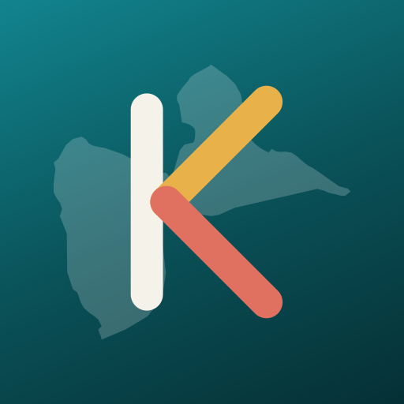
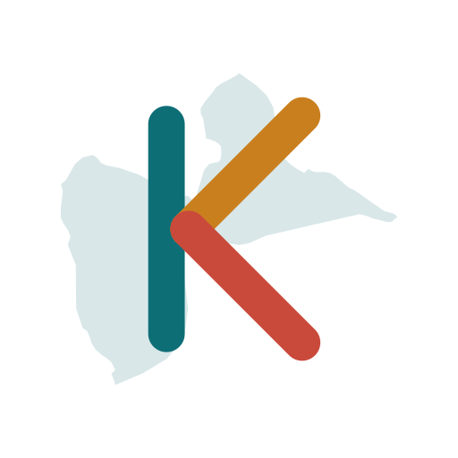
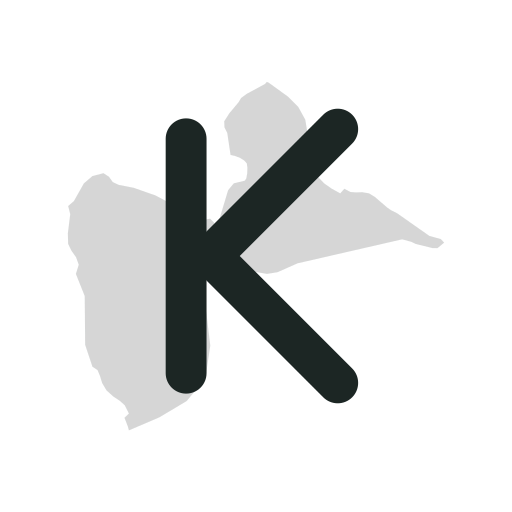
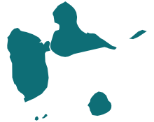
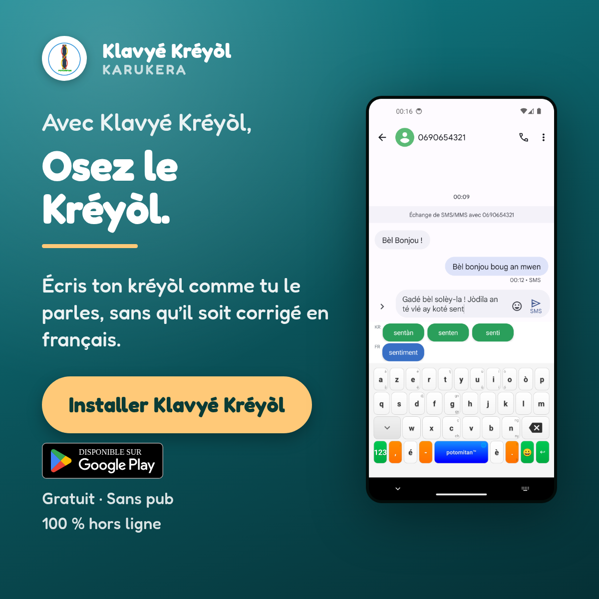
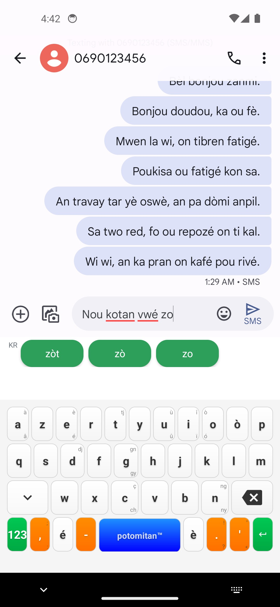

Potomitan™ · Référence de marque
Charte graphique
Tout ce qu'il faut pour fabriquer un support Klavyé Kréyòl Karukera sans repartir de zéro : le logo et ses limites, les trois palettes et leur territoire, la typographie, les composants réutilisables et la façon d'écrire.
Cette page est la référence. Les valeurs qu'elle affiche viennent des fichiers du dépôt : assets/theme.css pour le site, res/values/colors.xml pour l'application, publicites.html pour les visuels payants.
1. La marque
Un clavier créole pour les personnes qui parlent déjà kréyòl. Pas une méthode d'apprentissage, pas un assistant. Toute la communication part de là.
Les noms, et quand les employer
| Forme | Où |
|---|---|
| Klavyé Kréyòl | Nom court, par défaut : icône de l'application, barre de navigation, corps de texte, publicités. |
| Klavyé Kréyòl Karukera | Nom complet : titres de pages, dossier de presse, premières mentions dans un document institutionnel. |
| Potomitan™ | L'éditeur, jamais le produit. Signature de pied de page, mentions légales, page magasin. |
Accents obligatoires dans les trois cas, y compris en capitales. Jamais « Klavye Kreyol », jamais « KreyolKeyb » en public : c'est le nom du dépôt de code, pas celui du produit.
Les deux signatures
Maké an bèl Kréyòl asi téléfòn a-w.
Signature produit. Elle ouvre le pied de page du site et ferme les supports imprimés.
Teknoloji pou tout moun.
Signature de l'éditeur. Elle accompagne Potomitan™, pas le clavier.
Le signe ™ et la mention d'éditeur
Le nom de l'éditeur s'écrit Potomitan™, avec le signe, partout où il apparaît : sur les visuels, dans les crédits imprimés, dans les métadonnées des fichiers. Un visuel finit toujours par circuler seul, téléchargé d'une page ou réexporté par une régie, et cette mention est parfois la seule chose qui dise encore d'où il vient.
| Support | Où se lit Potomitan™ |
|---|---|
| Visuels publicitaires | Sous le nom du produit, dans le bloc de marque, en petites capitales |
| Tract, affiche | En tête de la ligne de crédits, en bas de la page imprimée |
| Triptyque | En signature de couverture et dans les mentions légales |
| Site | Dans le pied de page : « Potomitan™, Teknoloji pou tout moun. » |
| Tous les fichiers | Métadonnées : auteur, copyright, éditeur (voir §9) |
Une seule exception, mesurée : la bannière display 320×50. Cinquante pixels de haut, l'accroche et le bouton prennent toute la place, et une mention y serait illisible plutôt que discrète. Le logo y porte seul la marque, et les métadonnées du fichier prennent le relais.
Les quatre promesses
Elles reviennent partout, dans cet ordre, et se vérifient : gratuit, open source (MIT), zéro publicité, 100 % hors ligne.
2. Le logo
Le poteau-mitan : le pilier central de la case créole, celui autour duquel tout tient. Un poteau sombre, deux hélices qui s'y enroulent, un cercle d'unité, le nom en vert. C'est le signe de l'éditeur, et celui que portent les supports. Le produit a le sien, dessiné pour les tailles où celui-ci ne tient plus (§3).
Le tracé est fait de traits de 4 px dans cinq couleurs. Posé tel quel sur un fond sombre ou une photo, il perd le poteau et le nom. La pastille blanche circulaire n'est donc pas une variante décorative : c'est la façon normale de l'employer hors fond clair, avec une ombre portée douce quand le fond est chargé.
Zone de protection
Aucun texte, aucun bord, aucune autre marque dans un anneau égal au quart du diamètre du cercle.
Tailles minimales
Sous 48 px à l'écran et sous 12 mm à l'impression, « POTOMITAN » devient une tache verte. En dessous de cette taille, le logo ne doit plus porter seul l'identification : le nom écrit à côté prend le relais.
- Employer le SVG, jamais une capture d'écran ou un PNG redimensionné à la hausse.
- Le placer en haut à gauche des visuels, ou centré sur les formats verticaux étroits.
- Le laisser seul quand le nom « Klavyé Kréyòl » est déjà écrit ailleurs dans le visuel.
- Le retoucher. Ni recolorer, ni redessiner, ni simplifier, ni « moderniser ». Il se reprend tel quel.
- Le déformer, le faire pivoter, l'incliner, lui ajouter une ombre portée interne ou un contour.
- Le poser sur un fond sombre ou une photo sans sa pastille blanche.
- Le fondre dans une composition où il touche un autre logo sans sa zone de protection.
3. La marque produit
Un K blanc, ses deux bras partant du même point du fût, posé sur la silhouette de la Guadeloupe en filigrane. K comme Klavyé, Kréyòl, Karukera. Le jaune et le rouge des bras sont ceux des hélices du logo de l'éditeur : c'est ce qui rattache les deux signes sans les confondre.
Pourquoi un second signe
Sous 48 px le logo de l'éditeur perd son nom et ses hélices, la section précédente le dit. Or c'est exactement la taille d'un avatar dans une liste de discussions, et il n'y a là aucune place pour écrire le nom à côté. La marque produit est dessinée pour cette taille : trois traits épais, aucun texte, un fond plein qui lui évite la pastille blanche.
Les versions

Référence, pastille pleine.Par défaut, partout.
Aucune pastille à ajouter.

Détourée, sans pastille.En-tête, document, papier.

Une seule encre.Tampon, sérigraphie, gravure.
Zone de protection
Aucun autre signe, aucun texte, aucun bord à moins d'un huitième du côté de la pastille. Sur un avatar rond, la règle devient géométrique : l'image envoyée est carrée, l'application la rogne en cercle, et rien d'utile ne doit toucher les 12 % de bord.
Tailles minimales
La carte disparaît la première, vers 40 px, et c'est le comportement voulu : elle est un fond, pas une information. Sous 16 px il ne reste que trois traits sur un carré bleu, ce qui suffit encore à reconnaître le signe.
Les couleurs du signe
Elles appartiennent au logo, pas aux trois palettes : un signe garde ses couleurs quand il change de support, sinon il cesse d'être reconnaissable. Elles se changent dans docs/assets/logo/build_svg.py et nulle part ailleurs.
| Élément | Version de référence | Version détourée |
|---|---|---|
| Fond | #12848E → #0A5259 → #053035, dégradé à 157° | aucun |
| Fût du K | #F5F2EA | #0E6E76 |
| Bras haut | #E8B14A | #C97F1E |
| Jambe | #E0705F | #C94A3B |
| Archipel en filigrane | #FFFFFF à 20 % | #0E6E76 à 16 % |
Quel signe sur quel support
| Support | Signe |
|---|---|
| Avatar d'un groupe, photo de profil, icône de discussion | Marque produit : klavye-logo-640.png |
| Image d'invitation à un groupe | Marque produit : invitation.png |
| Badge d'ambassadeur | Marque produit, détourée ou en pastille selon le fond |
| Icône de l'application, page du magasin | Logo Potomitan, inchangé |
| Visuels publicitaires, tract, affiche, triptyque | Logo Potomitan |
| Site, barre de navigation, pied de page, favicon | Logo Potomitan |
{kind=link}
{kind=link}
Un support ne porte pas les deux à la fois. Quand la marque produit est seule sur un visuel, la mention Potomitan™ passe par les métadonnées du fichier, comme pour la bannière 320×50 (§1).
- Employer le SVG. Les PNG du dossier sont des rendus figés, pour les endroits qui n'acceptent pas de vectoriel.
- Pour un avatar, envoyer le carré 640 px et laisser le recadrage proposé tel quel.
- La laisser seule : le nom s'écrit à côté, jamais dedans.
- Relancer
build_svg.pypuisgenerate.pysi la silhouette de la Guadeloupe est un jour reprise.
- La recolorer pour l'accorder à un support, ni changer le fond, ni intervertir les deux bras.
- Renforcer la carte pour la rendre plus lisible, ou poser un texte dessus : elle est un fond, pas une illustration.
- L'employer comme icône de l'application ou en signature d'éditeur : ce n'est pas son rôle.
- La poser à côté du logo Potomitan sans la zone de protection de chacun.
4. Les couleurs
Trois palettes coexistent, et c'est voulu : elles ne s'adressent pas au même œil. Celle de la communication est sourde et lisible sur un long texte ; celle du produit est vive parce qu'un clavier se regarde au dixième de seconde ; celle des publicités est faite de dégradés qui survivent à la compression des réseaux. On ne les mélange pas dans un même support.
Palette de communication : le site, les imprimés, les documents
Source : assets/theme.css. Deux jeux, clair et sombre, sélectionnés par le thème du lecteur. Les contrastes indiqués sont mesurés sur le fond papier du mode clair.
--hibiscus-soft. En mode sombre les six couleurs dépassent 7:1, la contrainte ne concerne que le mode clair.
Chaque couleur vive a son fond assorti pour les encadrés : --sea-soft, --hibiscus-soft, --sun-soft. Le dégradé de marque, --gradient, va du lagon à l'hibiscus à 135°.
Palette produit : le clavier lui-même
Source : android_keyboard/app/src/main/res/values/colors.xml. Elle n'a pas à sortir de l'application : sur un support de communication, elle jure avec la palette ci-dessus.
Le blanc sur bleu caraïbe tombe à 3,8:1 : acceptable pour un glyphe de touche large et gras, pas pour une ligne de texte. Rayon des touches : 12 dp. Rayon des pastilles de suggestion : 16 dp.
Palette publicitaire : les visuels payants
Source : publicites.html. Deux axes créatifs et un fond papier, avec un seul accent chaud commun. Les couleurs y sont écrites en dur : un visuel exporté vit hors du site et ne doit jamais suivre le thème du lecteur.
Accent d'action : #FFC978 sur l'axe lagon, #FFD9A6 sur l'axe hibiscus. Il porte le bouton, le filet et les mots mis en avant dans l'accroche. Il ne sert à rien d'autre : c'est ce qui garantit que la tache la plus claire du visuel est toujours l'action.
Les valeurs dérivées
Deux séries de tons n'appartiennent à aucune des trois palettes et sont pourtant légitimes : elles n'ajoutent pas de couleur, elles interpolent celles qui existent déjà. Toutes deux naissent d'un besoin que des couleurs isolées ne savent pas satisfaire, celui de faire sentir un ordre. Elles vivent dans triptyque.html, qui en reste la source, avec une troisième valeur dérivée décrite plus bas.
Une rampe ne s'invente pas au coup par coup. Avant d'en dériver une nouvelle, vérifiez que le besoin est bien celui d'un ordre à lire, et non d'une simple envie de varier : deux fonds différents sans raison ne se lisent pas comme une progression, seulement comme une incohérence. Deux mesures conditionnent le reste : une marche sous ΔE 3 se confond avec la tolérance d'impression d'un aplat et se lira comme un défaut de tirage ; l'ordre des marches suit l'ordre de lecture, pas l'ordre des pages ou des faces.
Le crème des volets
Les quatre volets clairs s'assombrissent et se réchauffent dans l'ordre où ils sont lus. C'est la clarté qui porte la progression, de L* 96,1 à 85,5 ; la saturation ne fait que l'accompagner, C* de 1,0 à 9,9, pour rester dans la famille du papier plutôt que de virer au gris.
Marches de ΔE 4,7, 4,8 et 4,5. Les valeurs ne sont pas libres : deux encadrés en --sun-soft se posent sur les volets de rang 1 et 3, deux blocs en --sea-soft sur ceux de rang 2 et 4, et une rampe crème traverse forcément le sun-soft, qui est lui-même un crème chaud. Ce jeu est le seul qui tienne des marches d'au moins ΔE 4,5 en gardant chaque bloc lisible sur son fond : sun-soft à ΔE 12,3 et 6,9, sea-soft à 7,8 et 14,9. L'encre reste au-dessus de 10,6:1 sur le volet le plus foncé.
- Le rang est celui de la lecture, pas celui de la feuille. La première version ne croissait qu'au verso, alors que le premier volet clair lu est au recto : l'ordre réel des tons y était médian, froid, médian, chaud. Sur un imprimé qui se plie, numérotez les surfaces dans l'ordre où le lecteur les découvre avant de leur attribuer un ton.
- La saturation seule ne se voit pas au-dessus de L* 95. La deuxième version gardait une clarté constante et ne faisait varier que la saturation : à cette clarté l'œil compresse ces écarts, et des marches de ΔE 4 restaient invisibles à l'écran comme sur le papier. Une rampe de fonds clairs se construit sur la clarté ; la saturation ne fait que l'accompagner.
La version éco encre n'a pas de rampe : ses volets clairs restent tous sur le papier. Couvrir quatre surfaces d'aplats teintés contredirait sa raison d'être, et l'uniformité y est cohérente faute d'ordre à faire lire.
Les marches de la progression
Sept marches pour les sept niveaux de maîtrise, de Pipirit à Potomitan. Elles s'assombrissent avec la hauteur : le volet raconte une progression, et sa hauteur seule ne suffisait pas à la dire. La rampe reste dans la famille du lagon, clarté de 93 à 52 et saturation de 6 à 30, plutôt que de rejoindre l'ocre directement : le trajet direct passerait par un vert olive absent de la charte.
Le premier palier est --sea-soft, le sommet est le soleil : la rampe part et arrive sur des couleurs de la charte. La rupture du dernier ton est voulue et porte le sens, Potomitan étant d'une autre nature que les six paliers qui y mènent. C'est le seul emploi du soleil en aplat de fond.
L'hibiscus assombri, sur fond lagon pâle
Sur un fond --sea-soft, l'hibiscus de la charte ne tient que 3,87:1, sous le seuil de 4,5:1 du texte courant. #BA3C30 est le même hibiscus, même teinte et même saturation, assombri de cinq points de clarté : il atteint 4,64:1 sur ce fond.
Il ne s'emploie que là, et jamais comme substitut général de l'hibiscus. Sur papier ou sur blanc, c'est #C94A3B qui reste la couleur.
5. La typographie
Deux familles, chacune sur son terrain. Aucune troisième police n'entre dans un support.
Maké an bèl Kréyòl
Ronde, chaleureuse, lisible en petit. Graisses employées : 500 pour les sous-titres, 600 pour la marque, 700 pour les accroches.
Licence SIL Open Font 1.1, embarquée en base64 dans assets/fredoka-embed.css pour que les exports soient reproductibles hors ligne. Elle est réservée aux titres et aux accroches : sur un paragraphe entier, elle fatigue.
Un clavier créole qui comprend ce que vous écrivez
Corps de texte en pile système : -apple-system, "Segoe UI", "Helvetica Neue", Arial, sans-serif. Rien à télécharger, rendu natif sur chaque appareil, aucune police de secours qui décale la mise en page.
Potomitan™ · Référence de marque
La variable --mono sert aux surtitres en capitales espacées, aux formats techniques et aux chiffres alignés dans les tableaux.
Échelle
| Niveau | Taille | Graisse | Emploi |
|---|---|---|---|
| Surtitre | 12 px, interlettrage 0,09 em, capitales | normal, mono | Nature de la page, en lagon |
| Titre 1 | clamp(27px, 6vw, 38px) | 800 | Un seul par page, interlignage 1,1 |
| Titre 2 | 21 à 22 px | 800 | Sections |
| Titre 3 | 15 px | 700 | Sous-sections |
| Chapô | 16,5 px, 62 caractères max | normal | En encre douce, sous le titre 1 |
| Courant | 15 à 16,5 px, interligne 1,55 | normal | Paragraphes |
| Légende | 12,5 à 14,5 px | normal | En encre douce |
Les titres portent un interlettrage négatif de 0,01 à 0,02 em, et text-wrap:balance pour ne pas laisser un mot seul sur la dernière ligne.
6. Les éléments graphiques
La silhouette de la Guadeloupe
Elle remplace le drapeau sur les supports. Le tracé est dérivé de Natural Earth au 1:10 000 000, placé dans le domaine public par ses auteurs : l'archipel entier y est, Basse-Terre et Grande-Terre mais aussi Marie-Galante, les Saintes et la Désirade. Il se régénère avec python3 scripts/generate_carte_guadeloupe.py. Deux fichiers, un par type de fond, à choisir selon le fond et non selon le nom :

carte-guadeloupe-sombre.svg · remplissage #0E6E76, pour fond clair
carte-guadeloupe.svg · remplissage #F5F2EA, pour fond sombreEn filigrane sur un visuel, opacité de 14 à 16 %, dans un angle laissé vide. Derrière un objet, elle cesse de se lire comme une carte et ne fait plus qu'une tache : sur les formats denses, on la retire plutôt que de la réduire.
Sous 4 mm : la variante compacte
Dans une ligne de crédits, à la hauteur du texte, l'archipel entier ne se lit plus : les petites îles deviennent des poussières, et les deux grandes, réduites pour leur laisser la place, une tache. carte-guadeloupe-compacte.svg ne garde que Basse-Terre et Grande-Terre, cadrées au plus près, ce qui laisse toute la hauteur disponible au papillon.
 carte-guadeloupe-compacte-sombre.svg
carte-guadeloupe-compacte-sombre.svg
 carte-guadeloupe-compacte.svg
carte-guadeloupe-compacte.svg
Elle s'emploie à partir de 3 mm, pas en dessous, et jamais en grand : l'archipel complet reste la forme de référence partout où il y a la place.
Formes récurrentes
Le bouton d'action est toujours une capsule (border-radius:99px), toujours plein, et il n'y en a qu'un par écran. Sur le site il est en lagon sur papier ; sur les visuels, en accent chaud sur le dégradé. Le filet accent, hauteur 6 px, sépare l'accroche du reste.
Un QR code n'est pas un bouton. Il peut voisiner avec la capsule, jamais la remplacer : c'est l'instrument du geste, la capsule est ce qui dit lequel.
Cartes et encadrés : rayon 12 px, bordure d'un pixel en --line, fond --card. Les panneaux flottants portent une ombre 0 10px 28px rgba(0,0,0,.16), rien d'autre n'en porte.
Les pastilles de suggestion
C'est la signature visuelle du produit : le clavier propose le mot créole et le mot français côte à côte. Reprise telle quelle dans les visuels, avec le repère de langue coloré.
Repère kréyòl #7BE0A6, repère français #A8C6FF. Ces pastilles citent l'interface, elles n'appellent aucune action : fond translucide et contour, jamais d'aplat plein qui les ferait confondre avec le bouton.
Emoji
Ils servent de repères de navigation, un par entrée, jamais deux à la suite dans une phrase.
- Le cocotier 🏝️ et l'imagerie de carte postale. Le clavier s'adresse à des habitants, pas à des touristes.
- Le drapeau à fleur de lys. Symbole lié à l'esclavage, jamais employé pour représenter la Guadeloupe. La silhouette de l'île le remplace partout.
7. L'écriture
Le kréyòl
Le kréyòl employé dans les supports vient toujours du corpus du projet ou de textes déjà validés dans le dépôt. On ne rédige pas de kréyòl pour l'occasion : une phrase inventée est repérée immédiatement par les locuteurs, et elle décrédibilise un clavier qui promet justement de bien écrire.
Le français
- Vouvoiement, phrases courtes, verbes concrets.
- Pas de tiret cadratin. Deux-points, virgule, point médian, ou couper la phrase.
- Espace insécable avant les signes doubles et dans « 100 % », « 10 000 ».
- Chiffres en toutes lettres jusqu'à dix, en chiffres au-delà, sauf dans une donnée.
Face à la presse et aux institutions
Des faits et du contexte, jamais la conclusion à la place du journaliste. Quand l'intelligence artificielle est évoquée, l'angle est celui de la souveraineté numérique : une langue qui dispose de ses propres outils. Aucune comparaison avec les assistants du marché.
Ce que le clavier n'est pas
Ni une méthode d'apprentissage, ni un traducteur, ni un assistant conversationnel. Les suggestions viennent d'un dictionnaire et d'un modèle de n-grammes construits sur des textes créoles, entièrement sur l'appareil. Un support qui laisse entendre autre chose est à reprendre.
8. Les applications
Les supports existants montrent la charte appliquée. Ils sont le meilleur point de départ pour en produire un nouveau.



Combien d'actions par support
La règle d'une seule action a été écrite pour un visuel d'une seule surface, où deux boutons ne créent que de l'hésitation. Un imprimé qui se plie ne se lit pas ainsi : le lecteur découvre un volet à la fois, et le renvoyer chercher l'unique code à l'autre bout de la feuille, c'est le perdre. Sur un tel support, la redondance sert au lieu de nuire.
- Tract, affiche, visuel publicitaire, page web : une action, une capsule.
- Tout le reste du support conduit à elle.
- Une action par volet au maximum, jamais deux sur le même.
- La capsule est réservée aux volets de décision : celui qu'on voit avant d'avoir lu, celui qu'on lit en dernier.
- Les autres codes restent des vignettes légendées ou des illustrations de procédure, et ne prennent jamais la forme d'un bouton.
- Deux capsules dans un même support ne portent pas le même libellé : elles ne s'adressent pas au même lecteur, l'un n'a rien lu, l'autre vient de tout lire.
Le triptyque applique cette règle : quatre codes sur six volets, deux capsules, celle de la couverture et celle du dernier volet.
Les QR codes et leur traçage
Chaque code porte l'utm_source de son support, et chaque emplacement d'un même support son utm_content. Sans cela, quatre codes remontent dans la console Play comme une seule ligne et rien ne dit lequel convertit : la question de savoir combien de codes placer se tranche alors par un avis au lieu d'un chiffre.
Les cibles sont déclarées en clair dans scripts/generate_qr.py, qui régénère les images. Un QR est sinon un binaire opaque dont personne ne peut lire la destination sans le décoder.
Règles d'application
- Le logo en haut, l'action en bas, la preuve au milieu.
- Une seule action visible par surface, dans une capsule pleine.
- Les quatre promesses en pied : gratuit, open source, zéro pub, hors ligne.
- Sur les formats verticaux des réseaux, les 20 % du bas restent vides : l'interface de l'application les recouvre.
- Écrire « Klavyé Kréyòl » trois fois dans le même visuel : logo, accroche et bouton le portent déjà.
- Mélanger la palette du clavier et celle de la communication dans un même support.
- Retoucher une capture d'écran du clavier pour l'embellir : c'est la preuve, elle doit rester vraie.
- Ajouter une police, une icône ou une couleur qui ne figure pas dans cette page.
9. Les fichiers sources
| Élément | Fichier |
|---|---|
| Logo, vectoriel de référence | Logos/potomitanlogo.svg, copie publiée dans docs/assets/potomitan-logo.svg |
| Logo, rastérisé 512 px | docs/assets/potomitan-logo.png |
| Marque produit, vectoriels | docs/assets/logo/klavye-logo.svg, -clair et -mono, réécrits par python3 docs/assets/logo/build_svg.py qui relit la silhouette de la Guadeloupe |
| Marque produit, PNG et image d'invitation | python3 docs/assets/logo/generate.py, texte de l'invitation dans docs/assets/logo/invitation.html |
| Icône de l'application | android_keyboard/app/src/main/res/mipmap-*/ic_launcher.png |
| Palette de communication | docs/assets/theme.css |
| Palette produit | android_keyboard/app/src/main/res/values/colors.xml |
| Palette publicitaire | docs/publicites.html |
| Valeurs dérivées : crème des volets, marches de progression, hibiscus assombri | docs/triptyque.html |
| QR codes et leurs cibles | python3 scripts/generate_qr.py, vérification avec --check |
| Fredoka embarquée | docs/assets/fredoka-embed.css |
| Silhouette de la Guadeloupe | docs/assets/carte-guadeloupe.svg et -sombre, variantes -compacte et -compacte-sombre, regénérées par scripts/generate_carte_guadeloupe.py |
| Barre et pied de page partagés | docs/_includes/nav.html, footer.html, propagés par docs/scripts/sync_nav.py |
| Export des visuels publicitaires | python3 docs/assets/ads/generate.py |
| Métadonnées de marque | python3 scripts/tag_assets.py, vérification avec --check |
Les métadonnées de marque
scripts/tag_assets.py inscrit l'auteur, le copyright et le nom du produit dans chaque visuel du dépôt, aux trois emplacements que les outils savent lire : chunks iTXt et XMP pour les PNG, segments Exif, XMP et commentaire pour les JPEG, balises <title>, <desc> et <metadata> pour les SVG, dictionnaire d'information et XMP pour les PDF.
- Rien n'est réencodé : les octets d'image sont laissés intacts, repasser le script ne dégrade pas un JPEG.
- Il est idempotent, et
--checksignale les fichiers qui ont perdu leurs métadonnées. generate.pyl'appelle en fin d'export : un visuel publicitaire neuf n'est jamais nu.- Les visuels de tiers en sont écartés, badge Google Play en tête : y apposer notre copyright serait faux.
À relancer après avoir ajouté un visuel au dépôt, et après tout export qui produit des fichiers neufs.
Une question sur un usage particulier, un partenariat, une déclinaison : contact@potomitan.io.